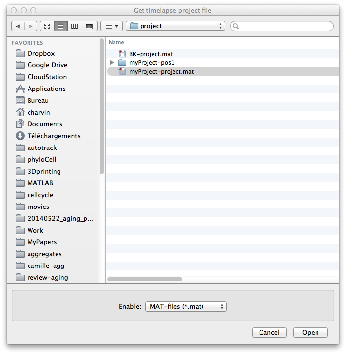
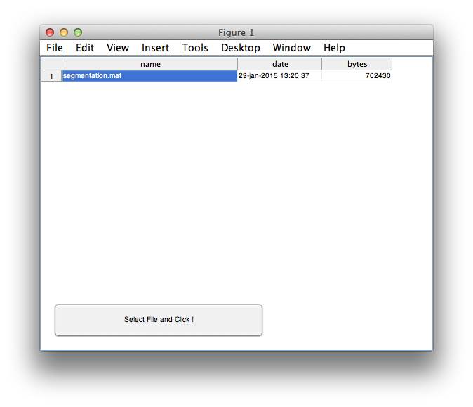
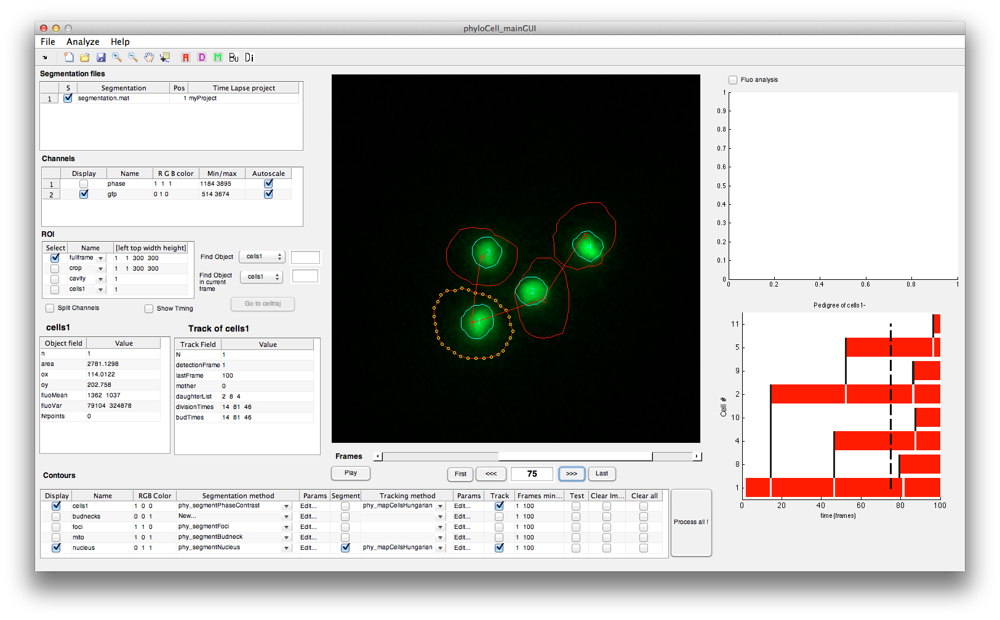

Opening segmentation projects with PhyloCell
Contents
Loading a project
Open phyloCell main GUI;
phyloCell_mainGUI;
Go to File > Open timeLapse project...
Select the .mat file that corresponds to your project. For instance go to the demo folder which contains a demo project

Then, select the position and segmentation file that you wish to work with. A project may contain an infinite number of positions. To each position is associated one or more segmentation .mat files, which contains the result of the segmentation processes. It is often convenient to duplicate or backup segmentation files. Therefore, the opening functions allows the user to select the appropriate segmentation file upon loading.


Switch to another position (once a project is open)
Once a timeLapse project has been loaded, you can switch to a different position by clicking File > Switch to another position... This will prompt to enter a new position and a segmentation file, see above. Please not that multiple projects/positions can be loaded in the same instance of phyloCell. The segmentation table in the top left corner lists all the open projects/positions
Save current analysis
The function File > Save current analysis will save the state of the segmentation as .mat file that is stored in the folder that corresponds to the current position.
Save current analysis as..
The function File > Save current analysis as... allows one to rename the segmentation variable for backup purposes